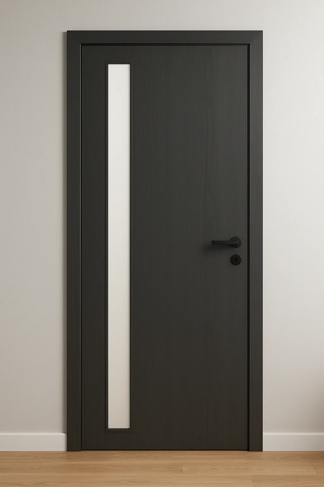
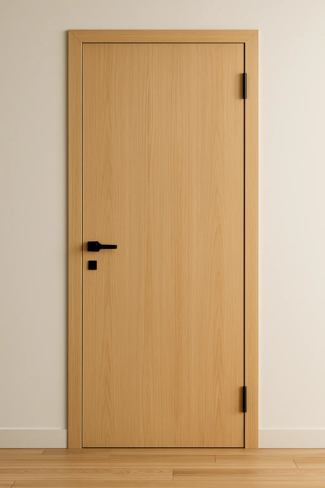
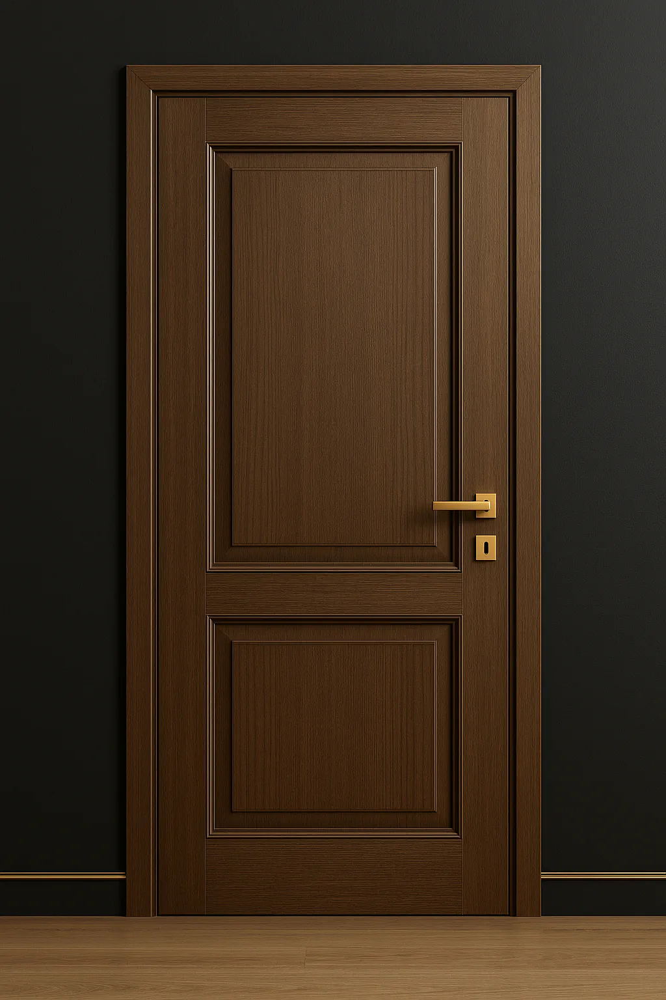

Oferujemy drzwi wewnętrzne przylgowe oraz bezprzylgowe, ramowe oraz płytowe. Poniższe opisy powównawcze pomogą ułatwić Ci wybór.
Przylgowe
Bezprzylgowe
Płytowe
Ramowe
Drzwi wewętrzne przylgowe
Budowa i konstrukcja
Skrzydło posiada przylgę, która nachodzi na ościeżnicę po zamknięciu. Zawiasy są widoczne, co ułatwia ewentualną regulację.
Najważniejsze cechy
✔ intuicyjne zamykanie
✔ dobra izolacja od dźwięków i światła
✔ klasyczne i sprawdzone rozwiązanie
Wygląd i styl
Pasują do wnętrz tradycyjnych i przytulnych, ale także do nowoczesnych w zależności od okleiny i detali.
Dla kogo?
Idealne do mieszkań rodzinnych — wygodne i praktyczne na co dzień.
Drzwi wewnętrzne bezprzylgowe
Budowa i konstrukcja
Typową cechą drzwi wewnętrznych bezprzylgowych jest skrzydło zlicowane z ościeżnicą Zawiasy są ukryte. Tworzy to efekt prostej i eleganckiej linii drzwi. Zamek magnetyczny zapewnia ciche użytkowanie.
Najważniejsze cechy
✔ minimalistyczny wygląd
✔ ciche i płynne domykanie
✔ łatwe utrzymanie w czystości
Wygląd i styl
Świetnie wpisują się w nowoczesne i designerskie wnętrza — drzwi „znikają” w przestrzeni i nie zaburzają estetyki ścian.
Dla kogo?
Dla osób ceniących nowoczesny wygląd i spójne, eleganckie wykończenia wnętrz.
Drzwi wewnętrzne płytowe
Budowa i materiały
Konstrukcja opiera się na wypełnieniu z tzw. „plastra miodu” lub płyty wiórowej otworowanej, obudowanej płytami HDF/MDF. Całość wykańczana okleiną, CPL lub lakierem.
Właściwości i użytkowanie
Lżejsze od drzwi ramowych, łatwe w montażu i wygodne w codziennym użytkowaniu. Przy wypełnieniu wiórowym mogą zapewniać dobrą izolacyjność akustyczną.
Wygląd i styl
Najbardziej wszechstronne wzorniczo — od minimalistycznych, gładkich powierzchni po modne frezowania. Dobrze wpisują się w nowoczesne wnętrza.
Dla kogo?
Dla osób oczekujących korzystnego stosunku ceny do jakości i szerokiego wyboru wzorów. Znakomite do mieszkań, inwestycji deweloperskich i realizacji budżetowych.

Drzwi wewnętrzne ramowe
Budowa i materiały
Konstrukcja oparta na solidnej ramie — najczęściej drewnianej lub z MDF — która odpowiada za sztywność skrzydła. Wypełnienie może stanowić panel, szyba lub ozdobne elementy frezowane.
Właściwości i użytkowanie
Wysoka stabilność i odporność na odkształcenia. Idealne do pomieszczeń o zmiennej wilgotności (np. kuchnie, łazienki). Bardzo dobre parametry użytkowe przy wieloletniej eksploatacji.
Wygląd i styl
Duża swoboda aranżacyjna — od klasycznych, frezowanych drzwi po nowoczesne z wąskimi ramami. Możliwość wykorzystania szkła dekoracyjnego jako elementu stylu.
Dla kogo?
Dla klientów wymagających i ceniących trwałość oraz bardziej wyrazisty wygląd skrzydła niż w drzwiach płytowych. Świetnw wybór do eleganckich wnętrz domów i mieszkań premium.